Ogni contributo verifica fonti primarie e indica cosa cambia per il destinatario. Mai marketing, mai pareri travestiti.
Ordinare merce che non si intende pagare può integrare un reato, ma non basta il semplice mancato pagamento. Serve la volontà di non adempiere già presente al momento del contratto…
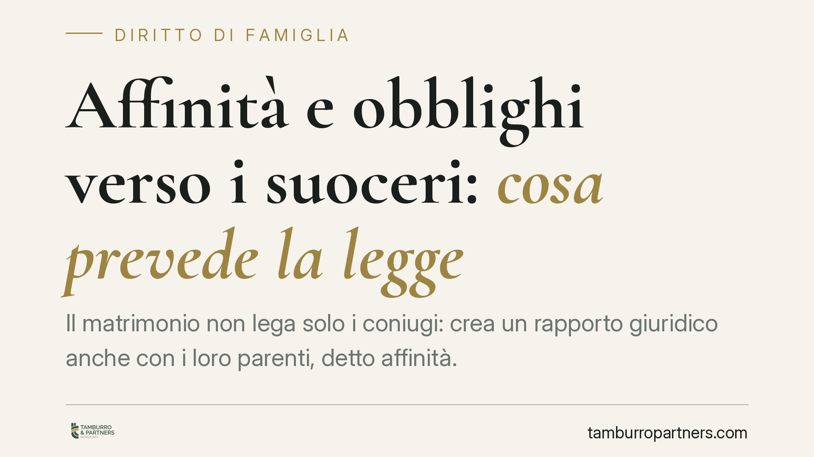
Il matrimonio non lega solo i coniugi: crea un rapporto giuridico anche con i loro parenti, detto affinità. Da esso derivano conseguenze concrete, come divieti matrimoniali e possi…
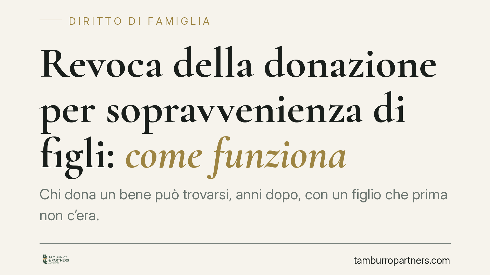
Chi dona un bene può trovarsi, anni dopo, con un figlio che prima non c'era. Il Codice civile prevede in questi casi la possibilità di revocare la donazione, ma entro termini stret…
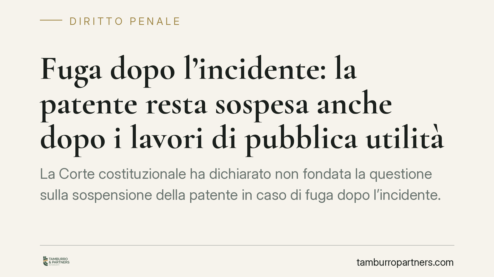
La Corte costituzionale ha dichiarato non fondata la questione sulla sospensione della patente in caso di fuga dopo l'incidente. Il completamento dei lavori di pubblica utilità est…
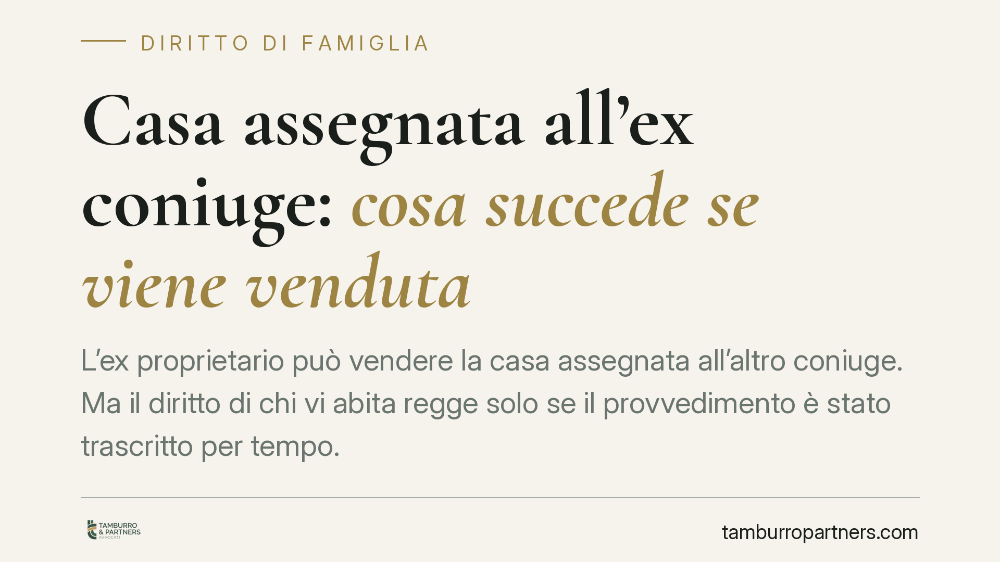
L'ex proprietario può vendere la casa assegnata all'altro coniuge. Ma il diritto di chi vi abita regge solo se il provvedimento è stato trascritto per tempo. In caso contrario, l'a…
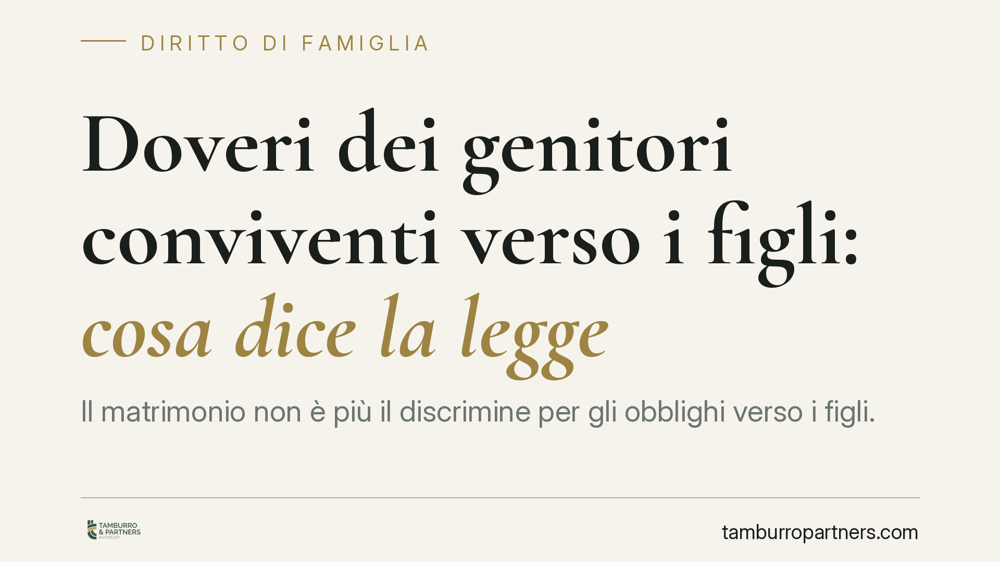
Il matrimonio non è più il discrimine per gli obblighi verso i figli. La legge italiana equipara genitori sposati e conviventi: mantenimento, istruzione, cura e assistenza morale v…
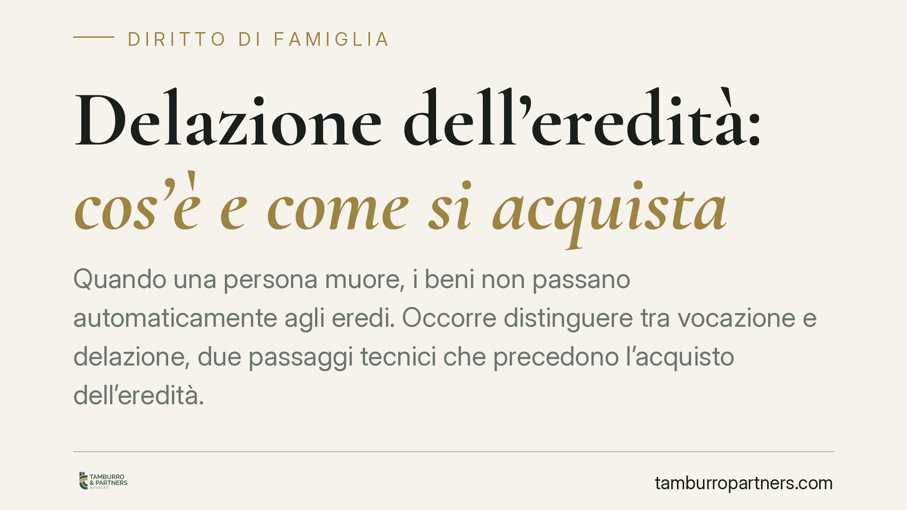
Quando una persona muore, i beni non passano automaticamente agli eredi. Occorre distinguere tra vocazione e delazione, due passaggi tecnici che precedono l'acquisto dell'eredità. …
Le condizioni fissate al momento della separazione non sono scolpite nella pietra. Quando muta la situazione reddituale di un ex coniuge o cambiano le esigenze dei figli, la legge …
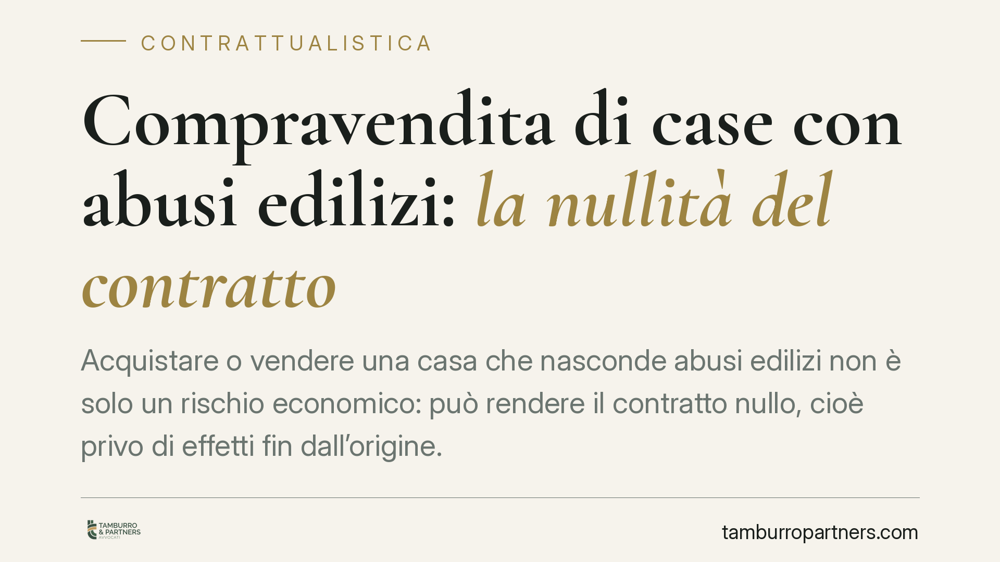
Acquistare o vendere una casa che nasconde abusi edilizi non è solo un rischio economico: può rendere il contratto nullo, cioè privo di effetti fin dall'origine. La regola vale anc…
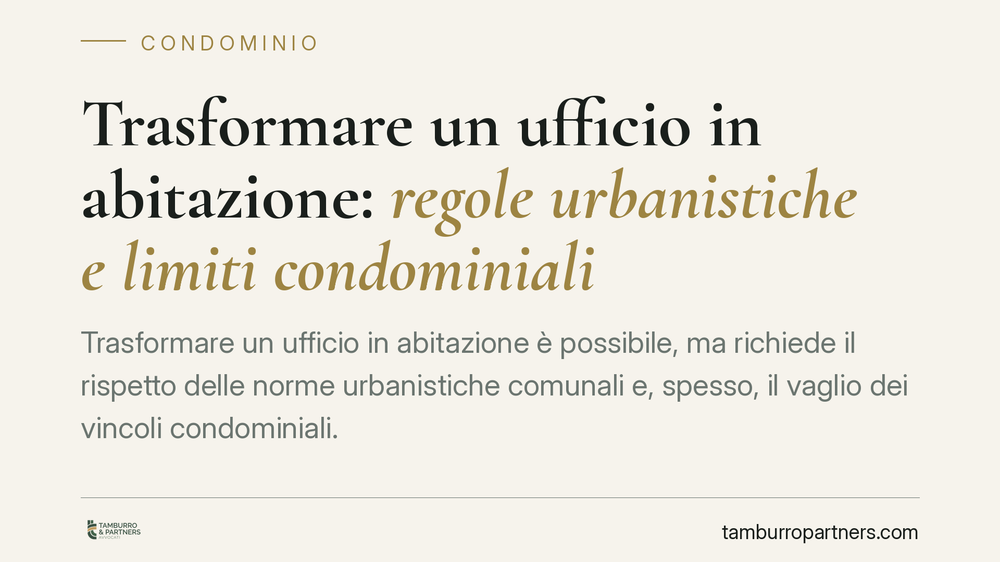
Trasformare un ufficio in abitazione è possibile, ma richiede il rispetto delle norme urbanistiche comunali e, spesso, il vaglio dei vincoli condominiali. Il decreto Salva Casa del…
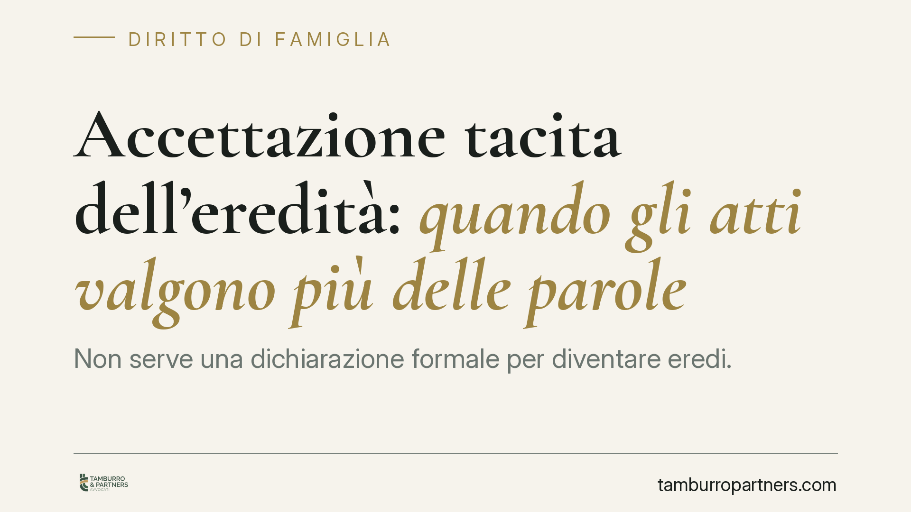
Non serve una dichiarazione formale per diventare eredi. Alcuni comportamenti concreti sul patrimonio del defunto — vendere un bene, incassare canoni, richiedere la voltura catasta…
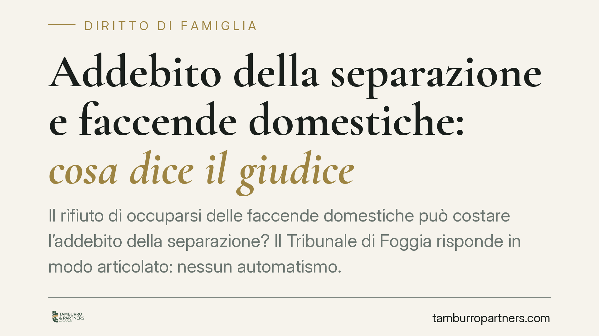
Il rifiuto di occuparsi delle faccende domestiche può costare l'addebito della separazione? Il Tribunale di Foggia risponde in modo articolato: nessun automatismo. Ciò che conta è …
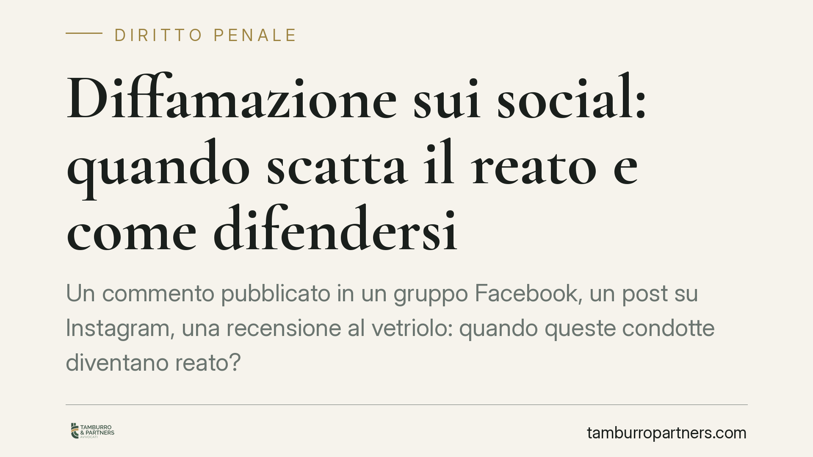
Un commento pubblicato in un gruppo Facebook, un post su Instagram, una recensione al vetriolo: quando queste condotte diventano reato? La diffamazione sui social è tra le fattispe…
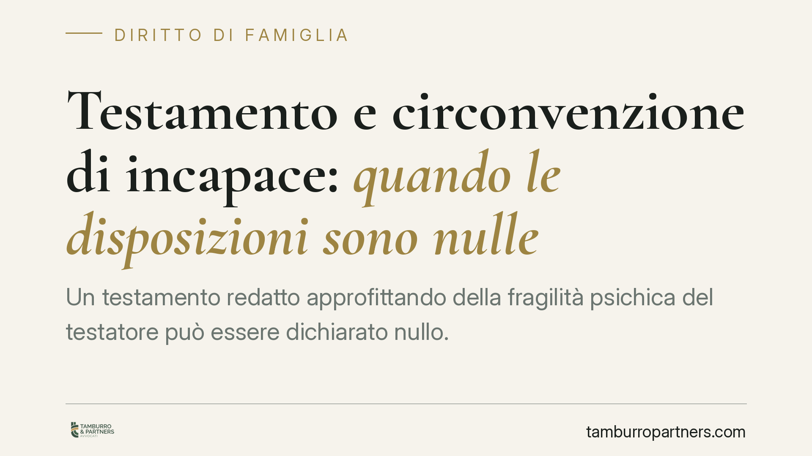
Un testamento redatto approfittando della fragilità psichica del testatore può essere dichiarato nullo. Lo ha ribadito il Tribunale di Bologna in una pronuncia dell'agosto 2025: qu…
La truffa online torna al centro del dibattito processuale. Dopo la Riforma Cartabia la truffa semplice è procedibile a querela della persona offesa: senza querela il procedimento …
Quando la persona offesa cambia versione in udienza, molti pensano che il processo per maltrattamenti finisca lì. Non è così. Il reato è procedibile d'ufficio e il giudice può fond…
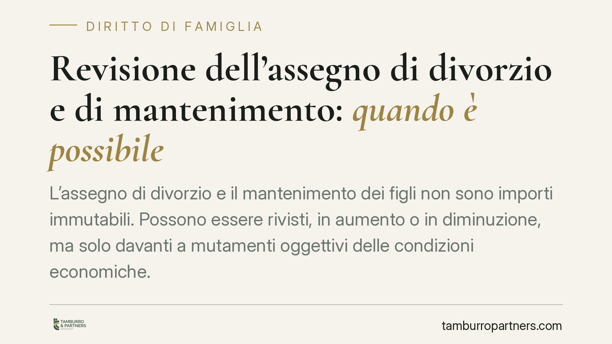
L'assegno di divorzio e il mantenimento dei figli non sono importi immutabili. Possono essere rivisti, in aumento o in diminuzione, ma solo davanti a mutamenti oggettivi delle cond…
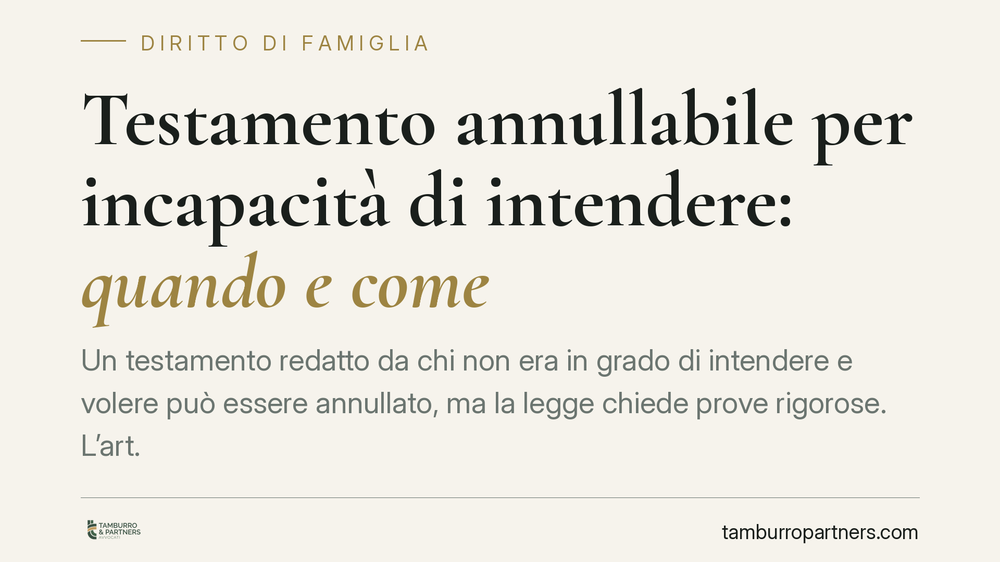
Un testamento redatto da chi non era in grado di intendere e volere può essere annullato, ma la legge chiede prove rigorose. L'art. 591 del codice civile fissa presupposti stringen…
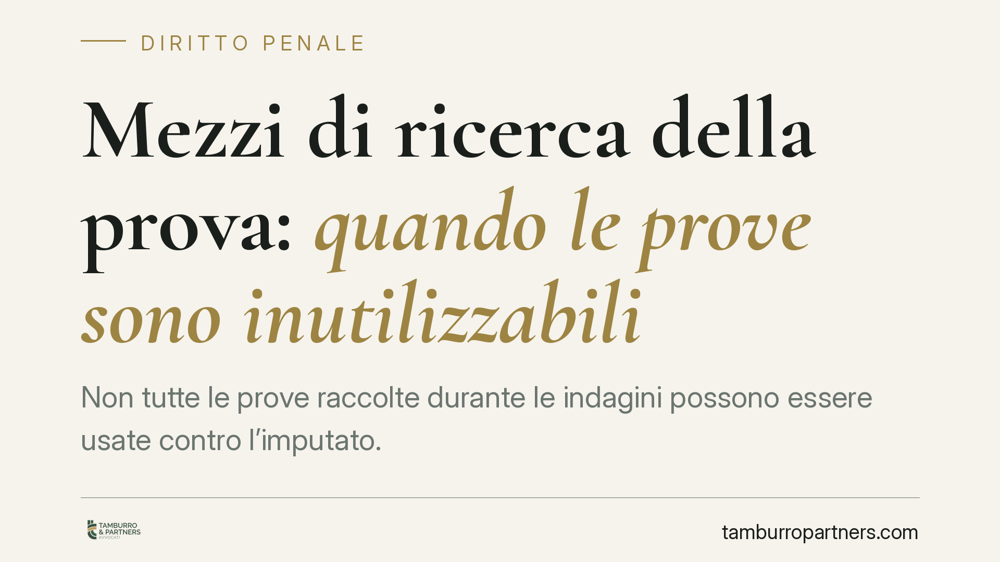
Non tutte le prove raccolte durante le indagini possono essere usate contro l'imputato. Il codice di procedura penale distingue tra prove acquisite in violazione di divieti e sempl…
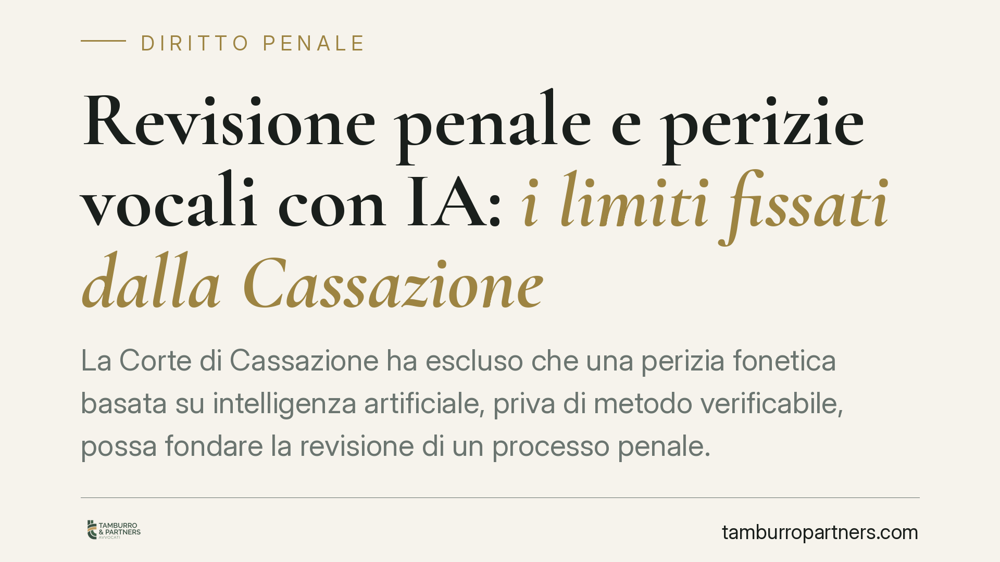
La Corte di Cassazione ha escluso che una perizia fonetica basata su intelligenza artificiale, priva di metodo verificabile, possa fondare la revisione di un processo penale. Il pr…
Chi compie atti che presuppongono la volontà di accettare l'eredità diventa erede, spesso senza rendersene conto. Da quel momento la rinuncia non ha più valore: l'accettazione è de…
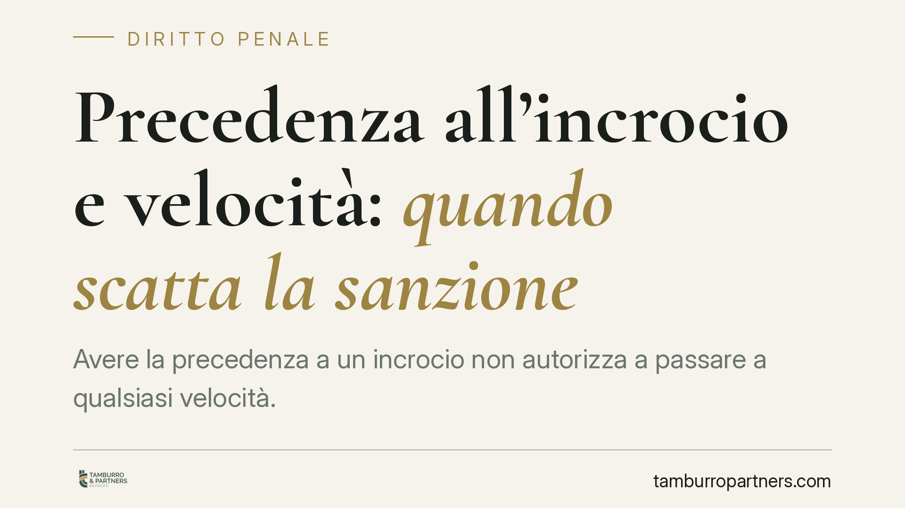
Avere la precedenza a un incrocio non autorizza a passare a qualsiasi velocità. La giurisprudenza è netta: chi transita troppo veloce può essere multato e, in caso di sinistro, ved…
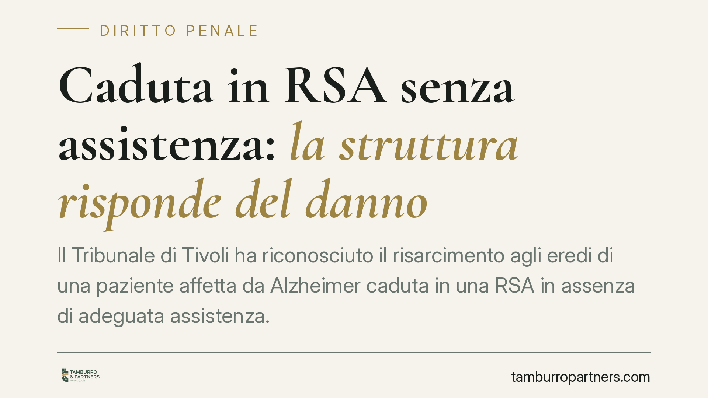
Il Tribunale di Tivoli ha riconosciuto il risarcimento agli eredi di una paziente affetta da Alzheimer caduta in una RSA in assenza di adeguata assistenza. La decisione ribadisce c…
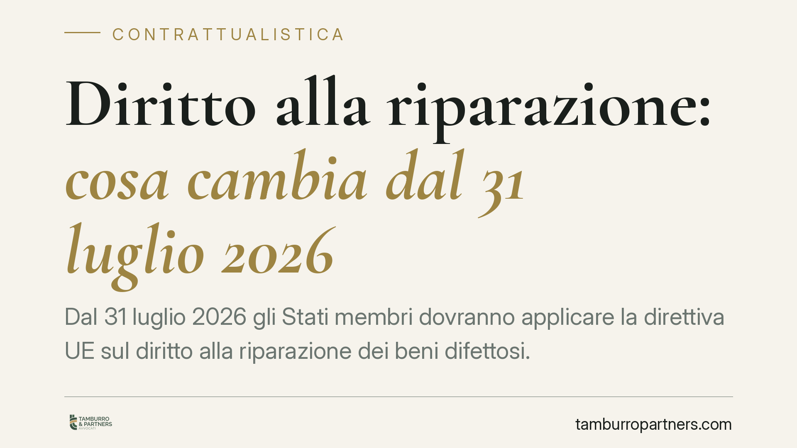
Dal 31 luglio 2026 gli Stati membri dovranno applicare la direttiva UE sul diritto alla riparazione dei beni difettosi. La norma rafforza la posizione del consumatore, introduce ob…
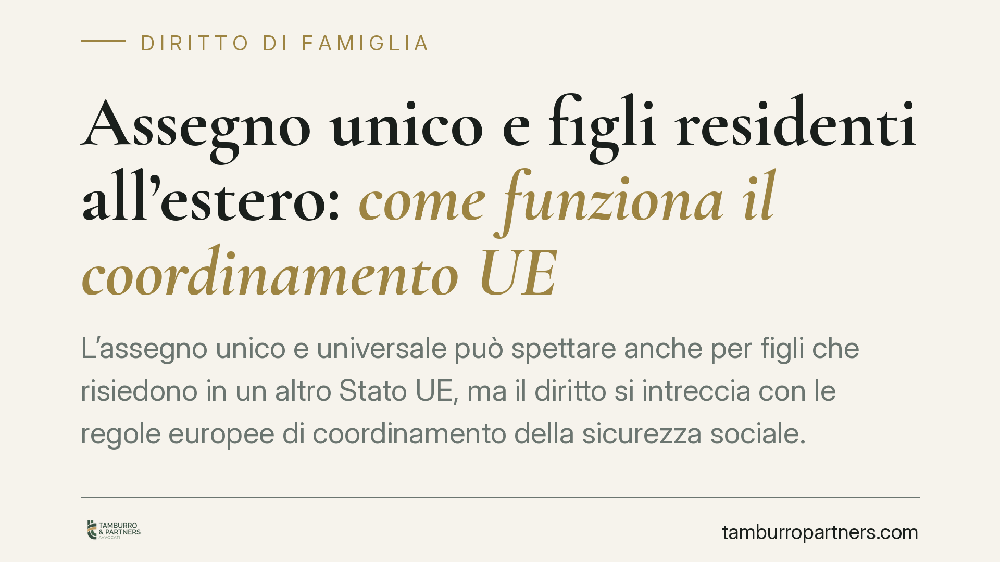
L'assegno unico e universale può spettare anche per figli che risiedono in un altro Stato UE, ma il diritto si intreccia con le regole europee di coordinamento della sicurezza soci…
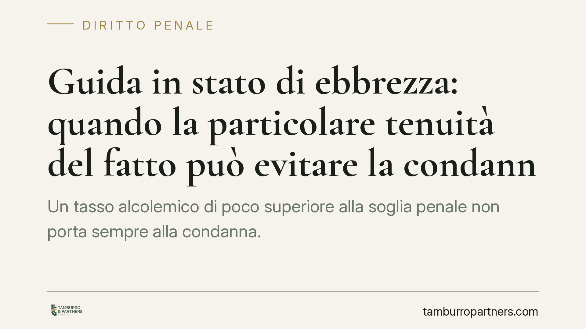
Un tasso alcolemico di poco superiore alla soglia penale non porta sempre alla condanna. In presenza di una guida non pericolosa, il giudice può escludere la punibilità per partico…
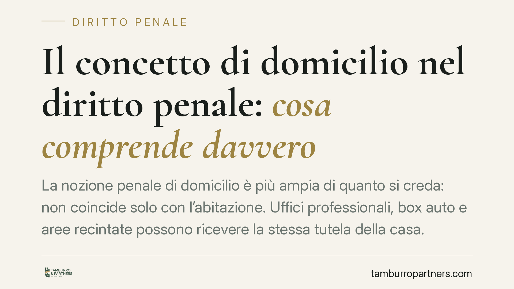
La nozione penale di domicilio è più ampia di quanto si creda: non coincide solo con l'abitazione. Uffici professionali, box auto e aree recintate possono ricevere la stessa tutela…
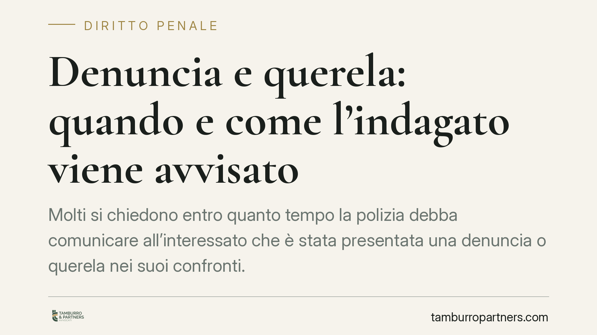
Molti si chiedono entro quanto tempo la polizia debba comunicare all'interessato che è stata presentata una denuncia o querela nei suoi confronti. La risposta sorprende: non esiste…
La comunione dei beni è il regime patrimoniale che si applica in via automatica ai coniugi che non scelgono diversamente. Sapere quali acquisti diventano comuni e quali restano per…
Chi acquista un immobile all'asta giudiziaria non sempre ottiene un bene libero. Se esiste un contratto di locazione registrato prima del pignoramento, l'aggiudicatario deve rispet…